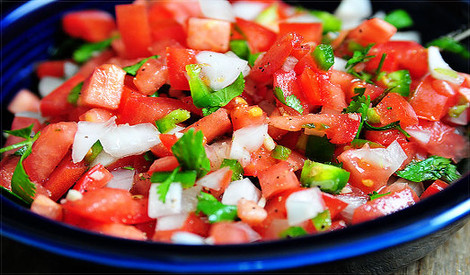
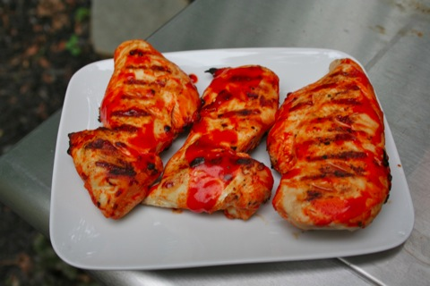

pico de gallo

Ingredients
- 5 Fresh tomatoes (diced)
- 2-3 stalks of green onion (chopped)
- Jarred or Fresh jalapeno peppers (to taste)
- 2 tbs Minced cilantro
- 1/2 medium onion (chopped)
- 1 TBSP olive oil, vinegar and juice from jarred jalapenos
Directions
- In a medium bowl, combine tomato,
- jalapeno pepper, cilantro and green onion.
- Season with garlic powder,
- salt and pepper. Stir until evenly distributed.
- ready in 25 minutes!
Buffalo Chicken

Ingredients
- 4 chicken breasts
- 1/2 cup hot sauce (your choice)
- 1 tbsp vinegar
- 1 tbsp melted butter
- 1/2 tsp pepper
- 1/2 cup blue cheese dressing
Directions
- Preheat oven to 400 degrees
- Combine hot sauce and next 4 ingredients.
- Pour over chicken and bake uncovered for 25 minutes
- serve with dressing